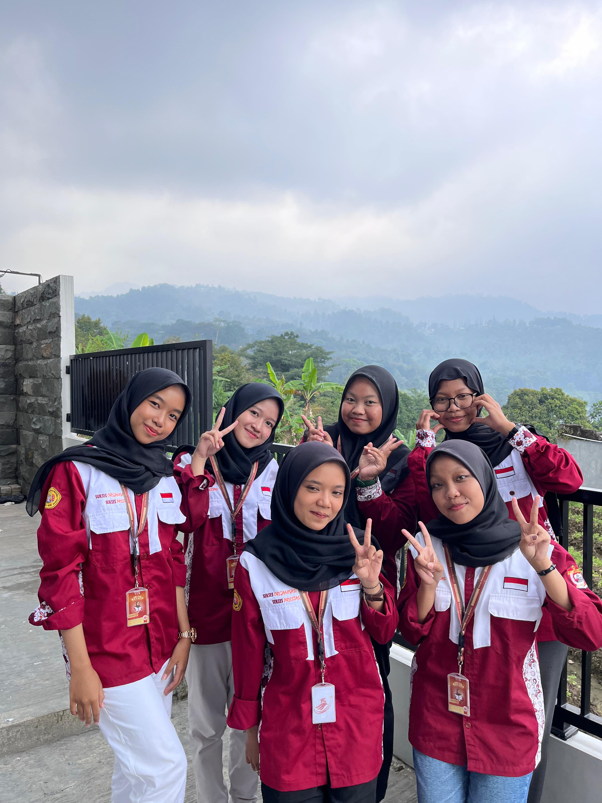
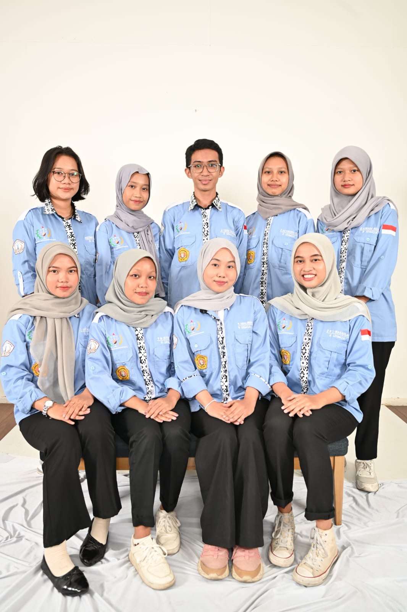
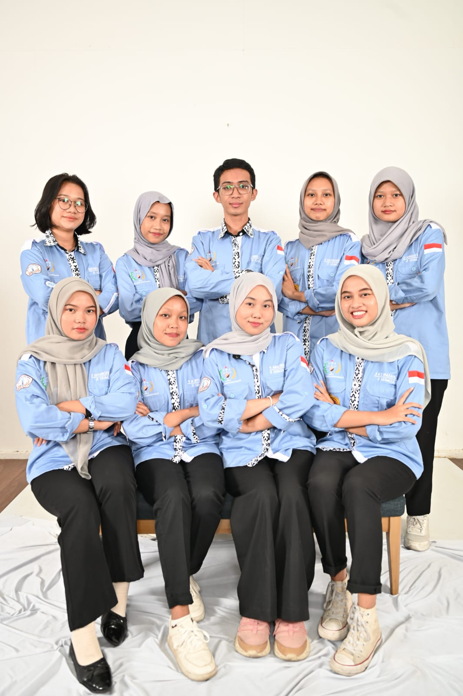
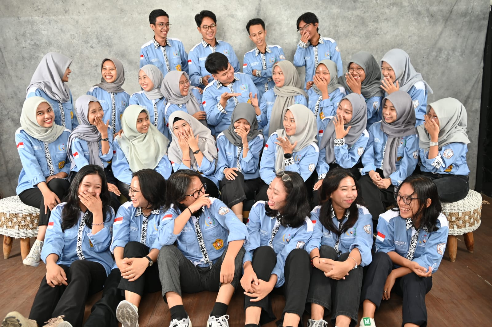
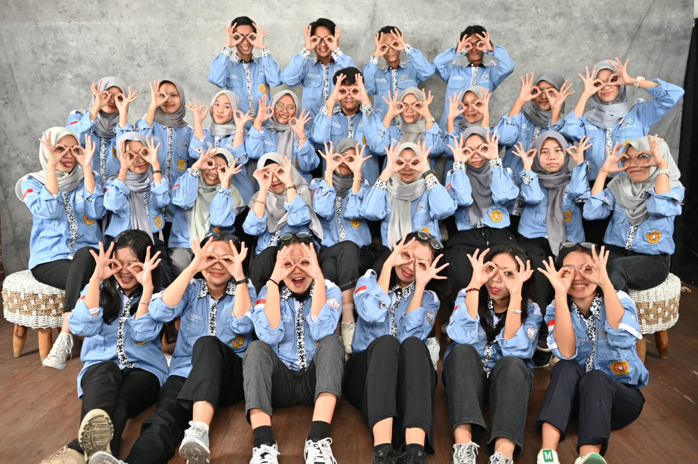

Experience
Professional Experience
PT Widya Inovasi Indonesia (Widya Robotics)
System Analyst
Aug 2025 – Dec 2025
- Prepared Software Requirement Specification (SRS) documents and business process flows as development guidelines, improving project scope clarity by 90%
- Conducted system requirements analysis by gathering and documenting 20+ user requirements from stakeholders to support client system development
- Performed System Integration Testing (SIT) and User Acceptance Testing (UAT) on 80+ test cases with a 100% success rate aligned with expected results
- Designed system modeling documentation including Use Case, Sequence Diagram, and ERD for 15+ core features, serving as the foundation for application development and structured database design, increasing development efficiency by 30%

Experience
Organizational Experience
UKM Penalaran dan Kreativitas
Financial Representative of the BPO Division
2024 - 2025
- Initiated a digital product sales platform program, naravistore, as a source of self-funding for organization
- Develop marketing strategies for digital services such as turnitin and premium apps with the marketing team
- Successfully attracted 5-10 customers every day steadily since the launch of the platform
- Collaborated with creative team to deliver high-impact visual content, increasing engagement by 40% on promotional channels

.jpg)
.jpg)
.jpg)
Badan Legislatif Mahasiswa Fakultas Ilmu Komputer
Staff of Commission 2
2024 – 2025
- Oversaw and assessed the performance of over 10 student committee activities at the faculty level
- Provide information from services to students related to institutional and communication of student organizations
- Create a legislative pedia periodically and reaching over 100 readers per issue



